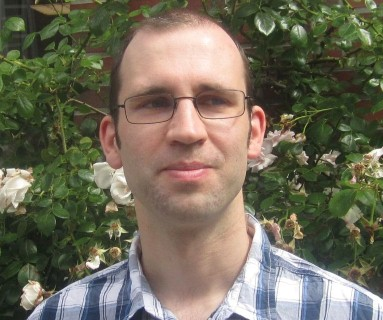

I am a Privatdozent (PhD. in 2008, habilitation in 2014) in computer science employed at both LRI Paris (part of Univerity Paris Sud) and the knowledge representation group at University of Erlangen.
Previously, I was at Jacobs University Bremen.
I am interested in
- formal languages and semantics: programming languages, logics, data description languages, ...
- knowledge management: representation languages, formal modeling, databases, scalability, semantic web, ...
- universal knowledge representation and system integration: frameworks, modularity, system interoperability, ...
- foundations of mathematics and computer science: logic, set theory, type theory, category theory, model theory, proof theory, ...
See UniFormal and the MMT system for my main research project.